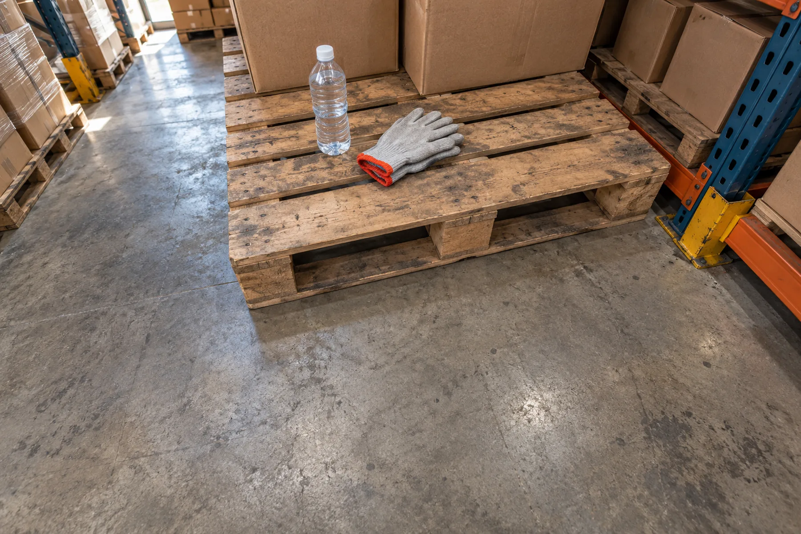

Guía
Qué acordar con tu equipo antes de grabar tareas en el trabajo
Una agenda para conversar antes de grabar: para qué, participación voluntaria, pago, el lugar, cómo pausar y adónde va el video.

Una cámara puede grabar una tarea y, al mismo tiempo, captar una pantalla, un documento o a alguien que pasa. Llevarla puesta mientras trabajas también puede ser incómodo. Antes de coordinar una grabación, necesitas conversar esas situaciones con las personas que participarían.
Mirentor propone recolectar video en primera persona de tareas manuales para ayudar a entrenar modelos de robótica. La participación voluntaria y el pago a quienes graban son parte del programa propuesto. Las condiciones concretas todavía hay que acordarlas; esta guía te ayuda a preparar esa conversación, no reemplaza un contrato ni una política aprobada.
Si eres dueño o responsable de operaciones, tu objetivo es que el equipo entienda la propuesta, tenga espacio para preguntar y conozca las condiciones antes de decidir. Esta agenda te ayuda a identificar lo que sigue sin resolver.
Explica para qué se grabaría el trabajo
Empieza por la tarea y el uso previsto del material. "Queremos evaluar si esta actividad se puede grabar desde tu mirada para aportar material a la investigación en robótica" es más preciso que presentar la cámara como una mejora automática del trabajo.
Explica también lo que todavía no sabes. Si alguien pregunta si estos sistemas van a afectar los empleos, no prometas que no habrá consecuencias. Una conversación sobre una prueba de grabación no puede garantizar lo que pasará con el empleo en el futuro.
No pidas una decisión mientras el uso del video y las condiciones de participación sigan sin explicarse. Las preguntas del equipo son parte de la preparación, aunque te obliguen a revisar la propuesta inicial.
Deja espacio para una decisión voluntaria
La propuesta es que participen las personas que quieran hacerlo, con un pago acordado. Que tú decidas explorar el programa no reemplaza la decisión de cada persona sobre llevar una cámara.
Antes de empezar, aclara cómo se explicaría la propuesta, cómo quedaría registrada la decisión y qué proceso aplicaría si alguien no quiere participar o quiere salirse. Define también una forma de hacer preguntas sin tener que resolverlo todo frente al resto del equipo.
No confundas salir del programa con lo que pasa con el material ya grabado. Qué pasa con ese video, si se puede pedir que se borre y qué límites podría tener esa solicitud son preguntas distintas que necesitan respuestas explícitas en las condiciones que apliquen.
Pon el pago en un acuerdo que se entienda
"Habrá un pago extra" deja demasiadas preguntas abiertas. Quienes participan necesitan saber quién les pagaría, qué cubriría el pago, cuándo se haría y cómo podrían revisar el cálculo.
En la propuesta de Mirentor, el dueño tendría que definir la parte que va a los trabajadores que participan. Esta guía no contiene una tarifa ni un porcentaje aprobados. Ese reparto hay que aclararlo antes de grabar, sin tomar una cifra de referencia como una oferta.
Separa las condiciones comerciales del programa de las condiciones de pago al trabajador. Un pago comercial basado en material aceptado no explica, por sí solo, cuánto recibirá una persona por participar ni qué pasará si se rechaza una grabación. Las dos partes del acuerdo necesitan una respuesta concreta.
Pide un ejemplo de cálculo por escrito con cifras aprobadas para tu caso, que distinga el tiempo grabado, el material aceptado y el pago correspondiente. Si todavía no hay criterios de aceptación ni un calendario de pagos, la conversación no ha terminado. No estimes ingresos multiplicando un turno completo por una tarifa de referencia.
Recorre el lugar antes de elegir dónde grabar
Revisa la tarea y lo que podría entrar en cuadro. Imagina, por ejemplo, una mesa de empaque al lado de una pantalla con datos de clientes. Aunque la idea sea mostrar cómo se empaca una caja, la pantalla podría aparecer cuando la persona se gira. Es un ejemplo hipotético, no una situación grabada por Mirentor.
Revisa pantallas, etiquetas, documentos, conversaciones, personas que no están en el piloto y zonas que hay que excluir. Identifica también si el equipo interfiere con herramientas, movimientos, equipo de protección personal o el paso de maquinaria.
No des por hecho que estos problemas se resolverán después con edición o anonimización. Antes de grabar tiene que estar claro qué se puede captar, qué debe quedar fuera de cuadro y qué pasa si algo se graba por error. El recorrido debe terminar en instrucciones concretas para quienes participan.
Define cómo detener una grabación y manejar un incidente
Un problema no debería dejar al trabajador improvisando. Si la cámara incomoda, aparece información que debía quedar fuera o cambia una condición de trabajo, el equipo necesita saber cómo pausar la grabación y a quién avisar.
Acuerden quién puede pedir una pausa, qué situaciones la exigen, quién revisa el incidente y qué tiene que pasar antes de volver a grabar. Comprueba que las personas saben aplicar esas instrucciones con el equipo con el que trabajarían.
Estas medidas tienen que ser parte de una revisión de seguridad adecuada al lugar. Esta guía no valida un dispositivo ni establece que una tarea sea segura de grabar.
Pide respuestas concretas sobre adónde va el video
Antes de participar, la empresa y el equipo deberían poder entender para qué se usará el material, quién podría recibirlo o acceder a él, cuánto tiempo se guardará y a quién escribir si hay una duda.
Si se propone una medida de protección, pide que te expliquen su alcance y sus límites. Restringir el acceso no es lo mismo que quitar la información que identifica a alguien, y ninguna ilustración del sitio demuestra que una medida de protección de datos se aplique a cada video.
Anota las preguntas sin respuesta y asígnalas a alguien que pueda resolverlas. Las condiciones necesitan una revisión adecuada al lugar y al uso previsto; este artículo no garantiza el cumplimiento legal ni una protección absoluta de la información.
Termina con un registro claro de acuerdos y preguntas abiertas
Al final, resume la tarea propuesta para grabar, quién mostró interés, cómo se definiría su pago, qué hay que excluir y cómo se manejarían las pausas y los datos. Separa todo lo que todavía no tiene una respuesta aprobada.
Si faltan condiciones esenciales, el siguiente paso es resolverlas antes de coordinar una grabación.
Usa esta agenda para reunir las preguntas de tu equipo e identificar las condiciones que todavía hay que resolver antes de considerar una grabación.